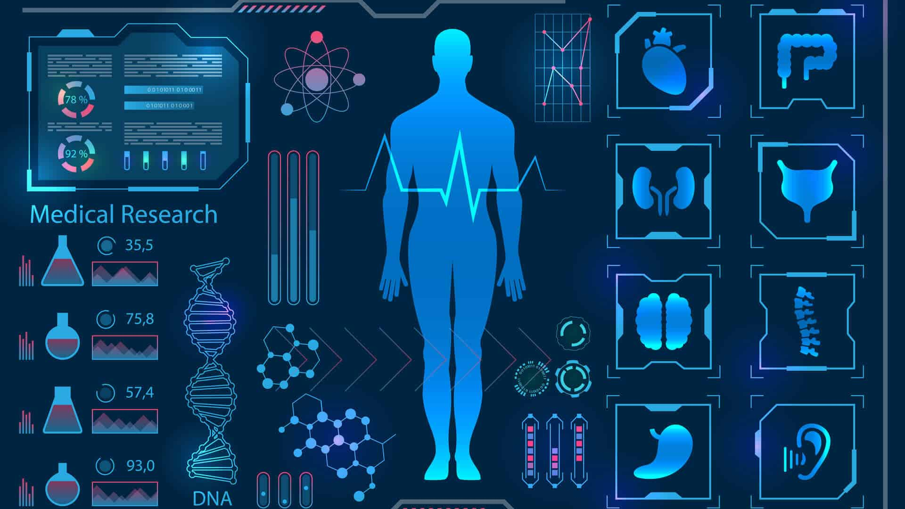

Let's not forget about computer's role in medical diagnostic

Computer-aided detection (CADe), also called computer-aided diagnosis (CADx), are systems that assist doctors in the interpretation of medical images. Imaging techniques in X-ray, MRI, and ultrasound diagnostics yield a great deal of information that the radiologist or other medical professional has to analyze and evaluate comprehensively in a short time. CAD systems process digital images for typical appearances and to highlight conspicuous sections, such as possible diseases, in order to offer input to support a decision taken by the professional.